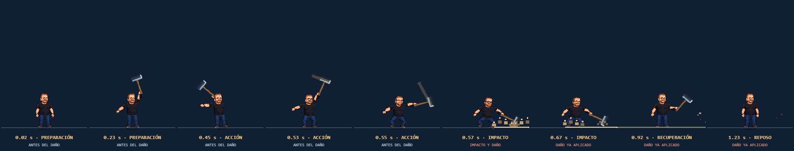
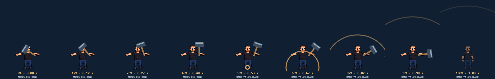
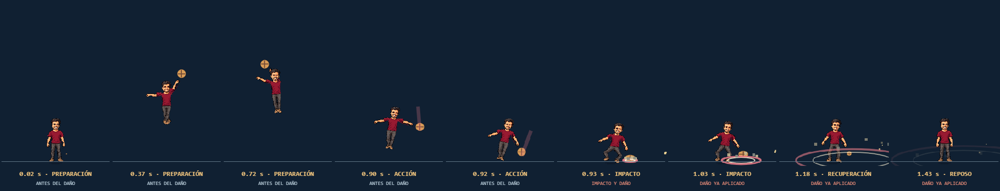
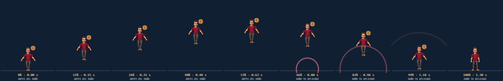
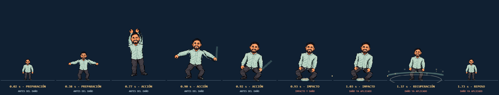
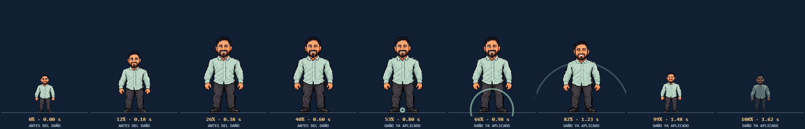
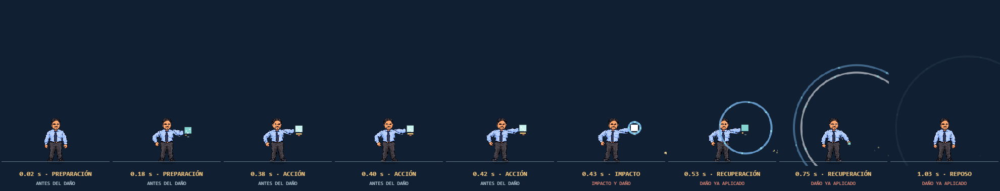
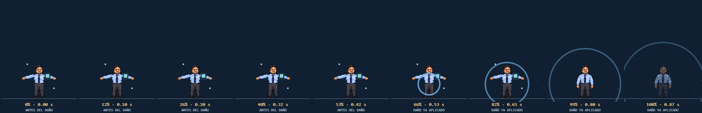
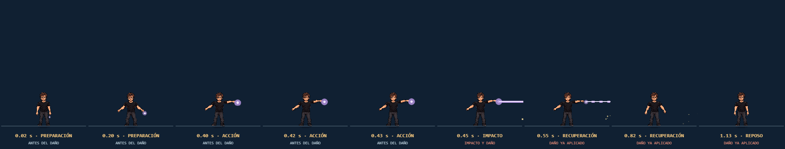
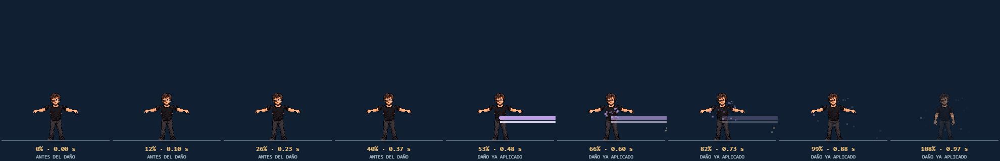

Definitivas con agarre,
fases e impacto sincronizado
Secuencias capturadas dentro del motor a 60 pasos por segundo, con el fondo aislado. «Después» muestra la versión 0.5; «Antes», la 0.4.0 que motivó el análisis. Desliza cada tira para recorrer preparación, acción, impacto y recuperación.
Análisis y resultado · Mediciones 0.5 · Mediciones 0.4.0 · Vista cuadro a cuadro
Ruzio · el martillo golpea el suelo
Levanta el martillo por detrás, lo descarga con aceleración y la cabeza toca el suelo en el mismo paso del daño (2,9 px). La onda nace en ese punto.
DESPUÉS

ANTES

Pulga · el daño llega al aterrizar
El salto mueve su posición real hasta 110 px. El balón va en su mano y toca el suelo cuando aterriza: ahí ocurre el daño.
DESPUÉS

ANTES

Tobi · crece, salta y golpea
Se agacha, crece con aceleración y frenado, levanta ambos brazos y golpea al aterrizar del salto.
DESPUÉS

ANTES

Marcelo · el pulso nace del dispositivo
Sujeta el aparato, la pantalla se carga y el pulso sale desde él. La otra mano queda en la cadera.
DESPUÉS

ANTES

Pallo · el hechizo sale de la palma
Se concentra, apunta y lanza la sutura desde la mano. Si cura, el hilo vuelve en verde con la vida recuperada; si no, vuelve en gris.
DESPUÉS

ANTES

Las poses todavía rotan recortes del sprite frontal. Un pase de pixel art con manos y torsos propios mejoraría el acabado. El tráiler ya muestra la versión corregida.